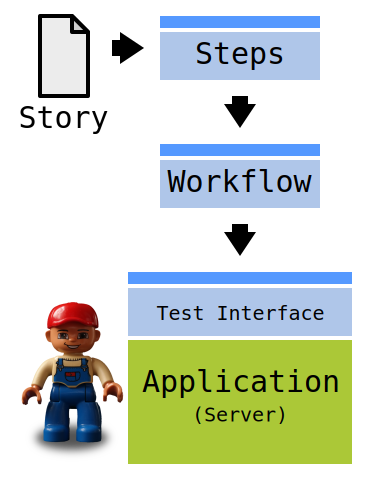
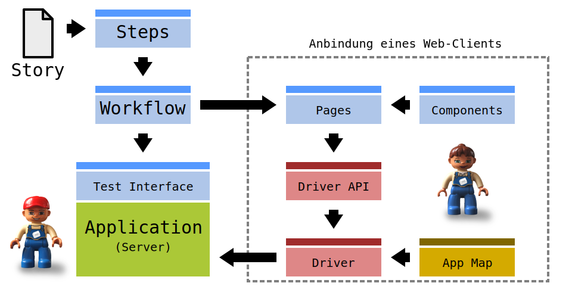
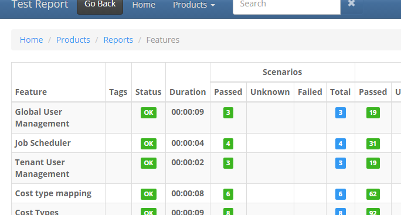

Behavior Driven Development
Vom Use-Case zum Test-Case


Manfred Hantschel
Software Entwickler, Porsche Informatik GmbH
Behavior Driven Developement
Theorie & Praxis
Methode der agilen Softwareentwicklung
Bessere Zusammenarbeit
Entwickler
QS
Kunde
Domain-Driven Design
Test-Driven Development
Vereinigung zweier Prinzipien
Domain-Driven Design
Sprache
standardisiert
detailiert fachlichen Ablauf
Story: As a <ROLE>
I want <FEATURE>
in order to <BENEFIT>
Beschreibung
User-Stories
Akzeptanzkriterien
Feature:
Given <PRECONDITION>
When <ACTION>
Then <POSTCONDITION>
Test-Driven Development
Feature: Sales list
As a manager
I want to list all employees
in order to select and edit one.
Scenario:
Given the list of employees is open
When I click on the name of the first employee
Then the detail page of the emplyee should open.
Akzeptanztests
Konzentration auf das Problem
Eingehen auf fachliche Details
Test-Quadranten
Test-Quadranten
1. Fallbeispiele
Leitfaden für die Umsetzung
Fallbeispiel = User-Story
genau ein Anwendungsfall
Einfachheit ist Trumpf
User-Story: Add article to cart
As a customer
I want to select an article
in order to put it into my shopping cart.
User-Stories als Sprintziele
2. Akzeptanzkriterien
Leitfaden für die Umsetzung
Akzeptanzkriterien = Scenarios
mehrere Szenarien je Story
Einfachheit ist Trumpf
Scenario: Add article to cart
[...]
Given the detail page of article "ART000042" is open
When the user clicks the "Add to Cart" button
Then the added to cart message should appear
And the cart should contain the article "ART000042"
Abstimmung mit Kunden
Gemeinsame Entwicklung
Einbindung in Entwicklungsprozess
Stories → Werkzeug
Ersatz für Lasten- und Pflichtenheft?
Abstimmung mit QA
Szenarios als automatisierte Testfälle
Ergänzen Testkatalog (aber kein Ersatz!)
Bessere Kommunikation
Umsetzung der Tests
Implementation: Given, When, Then
Test first
Eingebunden in Spezifikations- und Testprozess
3. Umsetzung
Leitfaden für die Umsetzung
Umsetzung und Abnahme
Umsetzung nach User-Stories und Acceptance Tests
QA testet zunächst manuell, dann automatisiert
Automatische Spezifikation für Kunden
In der Praxis
Behavior Driven Develoment
Porsche Informatik GmbH
Teil der Porsche Holding
Über 400 MA in allen Bereichen der IT
Softwarelösungen für alle Bereiche des Automobilhandels
BDD in mehreren großen Projekten

Typischer Entwicklungsprozess
Product-Owner formuliert die Idee
Anforderung wird in Datenbank erfasst
Konkretisierung
Alle Beteiligten arbeiten mit
Einfache Fragen stellen
Es Entstehen:
Behaviors, Story-Files, UI-Mockups, Aufwände, Schnittstellen, ...
Formalisierung
Bewertung: Wichtigkeit, Aufwand, Automatisierung
Formulierung der Szenarien
User-Story: Add Article to Cart
As a customer
I want to select an article
in order to put it into my shopping cart.
[...]
Scenario: Duplicate Article
Given the shopping cart already contains an article.
When the user selects the same article
And clicks the "Add to Cart" button
Then the cart should contain the article only once
But with a count of 2.
[...]
Stationen eines Story-Files


Umsetzung

@Given("the user $name is logged in")
public void ensureUserLoggedIn(String name)
{
User user = userSrevice.getCurrentUser();
if (!name.equals(user.getName()))
{
userService.logout();
userService.login(name);
user = userService.getCurrentUser();
}
assert name.equals(user.getName());
}
Umsetzung

@Given("the user $name is logged in")
public void ensureUserLoggedIn(String name)
{
User user = userWorkflow.login(name);
assert name.equals(user.getName());
}
Umsetzung

Was haben wir erriecht?
Anpassungen nur an einer Stelle
Wiederverwendung der Workflows, Componenten und Pages
Mapping unterstützt Test-Driven-Development
Automatisierungstool is austauschbar
Do's & Dont's
Nicht alles automatisieren
Szenarien müssen lesbar bleiben
Keep it simple
Auf die Wartbarkeit achten
Robustheit, Robustheit, Robustheit
Nicht aufgeben!
Integration
Behavior Driven Development
Was tun wir damit?
Automatisierte Builds
Build → Test → Deployment → Acceptance Tests → Documentation
Lokale Tests
Gegen Entwicklungsumgebung
Gegen Ad-Hoc Server

Laufzeit
Parallelisierung
Mehrere Testumgebungen
@VIP Tag
Testdaten
Test bereiten Daten selbst vor
Vorbereiten der Datenbank
DDL durch Liquibase
Vorbereiteter Mandant
Migrationsmechanismus
Frameworks & Tools
Behavior Driven Development
Verwaltet Feature-Files
Test-Framework Anbindung
Java, Ruby, .Net, Flex, ...
Andere BDD Frameworks
JBehave: Ähnlich zu Cucumber-JVM
JDave: Java-Files als Feature-File
easyb: Groovy-basiert
Gherkin: Sprachdefinition/-parser für Feature-Files
Liquibase

Automatisiert DDL Änderungen
Versionsverwaltung
XML-basiert und DB-unabhängig
Cucumber Report DB
https://github.com/porscheinformatik/cucumber-report-db
Verwaltet Testergebnisse
Historische Vergleiche
Highscore

Behavior Driven Development
Anhang
Referenzen
Behavior Driven Development
"Introduction BDD" von Dan North: ein Einführung ins Behavior Driven Development
http://behaviourdriven.org/: Webpräsenz speziell zum Thema Behavior Driven Development
BDD in Action: Behavior-driven development for the whole software lifecycle by Smart, John Ferguson (2014) Paperback (ASIN: B00RKQDB4E)
Referenzen
Cucumber
https://cucumber.io/: Das Cucumber Framework
The Cucumber Book: Behaviour-Driven Development for Testers and Developers (Pragmatic Programmers) (ISBN-13: 978-1934356807)
Behavior-Driven Development with Cucumber (ISBN-13: 978-0321772633)
Referenzen
Domain-Driven Design
http://domaindrivendesign.org/: Domain Driven Design Comunity
Domain-Driven Design: Tackling Complexity in the Heart of Software (ISBN-13: 978-0321125217)
Referenzen
Continuous Delivery
Continuous Delivery: Web-Präsenz
Continuous Delivery: Reliable Software Releases Through Build, Test, and Deployment Automation (Addison-Wesley Signature) (ISBN-13: 978-0321601919)
Referenzen
Selenium HQ: Browser Automation
Liquibase: Source Control for your database
Test Quadranten: Homepage von Brian Marick
Media


 "disassembled_keyboard_keys_MG_8586_sm" by
Will Culpepper is licensed under
CC BY-SA 2.0 (slightly modified:
darkened).
"disassembled_keyboard_keys_MG_8586_sm" by
Will Culpepper is licensed under
CC BY-SA 2.0 (slightly modified:
darkened).


Präsentiert mit
Behavior Driven Development: Vom Use-Case zum Test-Case
http://thred.github.io/presentation-bdd/

This work is licensed under a Creative Commons Attribution-ShareAlike 3.0 Unported License by Manfred Hantschel.